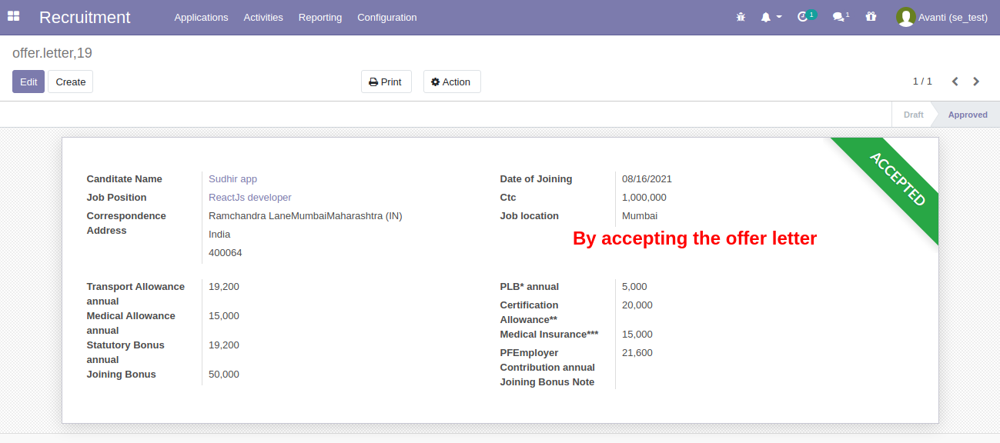

RECRUITMENT
ROLES IN THE SYSTEM
1. Hiring Manager
2. HOD
3. Interviewer 1
4. Interviewer 2
5. HR
6. Admin
JOB APPLICATION
CV SELECTION AND SCHEDULE MEETING
INTERVIEW 1
OFFER LETTER
ANALYTICS REPORT
PREVIOUS OKRs
PMS ANALYTICS EXPORT:
PIP/BIP:
LEAVE MANAGEMENT
SUMMARY FLOW OF RECRUITMENT
JOB POSITION CREATION
Hiring manager can create the Job Position. In the Job Position, Hiring Manager will select the department, Job location and Number of New employees (Expected New Employees) and then he needs to select the recruitment manager’s name and Hiring Manager (in case the job position needs to be assigned to someone else). It will automatically reflect in the Job Application.
After creating the Job Position it will go for approval. Only a HOD can approve this after checking the details. To approve a Job Position HOD needs to go to Configuration and select “Job Position Needs to be approved” and just click on the Approve Button.
Admin needs to give HR HOD access rights as the HOD. To give the HOD access, Admin needs to go to the settings and select the employee and click on the HR HOD option and save it.
And the HOD will find the Approve option on the Top Left corner of the system. He needs to just click on it and the Position will be activated
Once the HOD approves the Job Position, it will change the state to “Recruitment in Progress”
Now Recruitment Manager can check all the active job position and starts the recruiting process
JOB APPLICATION
This is the Kanban View of Job Application. All applications are visible here stage wise.In the Recruitment process, Recruiter will add/create an application and fill the candidate details and Interviewer details. The Recruitment Manager can also attach the CV of the applicant
CV SELECTION AND SCHEDULE MEETING
The next stage is CV selection stage, in this stage Recruitment Manager and Hiring Manager can reject or approve the candidate for the next stage which is Technical Interview 1.Once the candidate’s CV gets approved then the Recruiter just needs to click on the Approve button and stage will change.

Recruiter can schedule a meeting for the Technical Interview 1 and Interviewer 1 and candidate will get mail of interview.
Here Recruiter can select Attendees and time of interview and Reminder for the interview.
Recruitment Manager will fill the common IRS Comments - Current CTC, Expected etc..
And then this initial information will automatically get populated in every IRS. There is no need to fill it every time. The salary details will be visible only to the second interviewer.
INTERVIEW 1
Once Interviewer 1 logs in the IRS button will be visible and the system will allow the creation of the IRS. Interviewer 1 will create the IRS for the candidate and submit it.The default IRS comments will be visible automatically in IRS form from the main form.
Interviewer 1 will give ratings to the candidate
Interviewer 2 is different so Interviewer 1 cannot create IRS for Technical Interview 2. Access rights to check IRS is role wise so the Interviewer 1 cannot see IRS of Interviewer 2.
As can be seen in the screenshot, here Interviewer 2 name is mentioned so only he can process for technical Interview 2.
Once Interviewer 2 logs in then he can create an IRS for round 2 and Interviewer 2 has the right to check the IRS of Interviewer 1 also.
System will retrieve all the details from the main page related to the IRS on Interviewer 2 IRS page and Interviewer 2 will give rating for the second round.
Interviewer 2 can check the IRS from the smart button. Interviewer 2 cannot check the HR Interview.

HR needs to follow the same process for the HR round. HR will login and fill the IRS for the HR Interview round.
Here, we can see HR’s IRS on the smart button. HR has access to check the IRS of Interviewer 1 and 2 as well.
In the candidate selection stage, the recruitment manager can reject or approve the candidate as per the internal decision.
Once Recruiter approves the candidate the system will show the option to create the offer letter
OFFER LETTER
After preparing the offer letter, the recruiter needs to send that offer letter for the approval to the HOD. The recruiter needs to click on the Send Email to HOD and the system will send the offer letter for approval.The HOD will receive the mail to approve the offer letter. HOD needs to click on the Approve button. Once the offer letter is approved the recruitment manager would get the option to release the offer letter to the candidate. The screenshot below shows a sample offer letter email as received by the candidate.
Candidate can then accept the offer letter and the application will then move to the offer accepted stage.
Once the offer has been accepted by the candidate, the system will show this Accepted tag on the Offer letter screen. 
In Job Application, the system will automatically change the stage to Offer Accepted stage once a candidate accepts the offer.
Once the offer letter is accepted the applicant will move to the “Candidate engagement” stage. In that stage Recruiter can send mail to candidates for different activities like document submission etc.
Once approved at this stage the applicant will move to employee creation where we will get an option to create an employee.
Once an employee is created then the concerned departments would get notification mail with the name of the employee so they can start the onboarding process.
ANALYTICS REPORT
In this report, Users can check the report Team wise. User needs to select a team from the drop down or If it’s blank then the system will generate the report for all the teams.In this report, Users can check report Position wise. From the drop down user needs to select a position then the system will generate a report for a particular position or else if it’s blank then the system will generate a report for all positions.
In this report, Users can check the report Hiring Manager wise. User needs to select the Hiring Manager and if it’s blank then the system will generate a report for all the hiring managers.
In this report, Users can check report Source wise like Linked In, Monster… User needs to select the source and if it’s blank then the system will generate the report for all the sources.
Roles: Administrator: Administrator will be having all access rights and can manage all activities. Administrator can update passwords, create, duplicate and delete users Officer: Officer can do any operations wrt assign department. Will have access to all records and can conduct any operations within that department Kiosk Attendance: Kiosk attendance mode provides the facility for an employee to mark his /her attendance using their badges, pin or mark it manually Own Employee: Employee Own records enables your employees to see (read only) only their own records like attendances, leaves, Timesheets, payslip, etc. Interviewer: Interviewers have all access to the recruitment module. Can perform activities like call, email, meeting, upload documents. Can view, offer, reject or recruit all the applicant by job positions Time Off: Administrator will be having all access rights (except Activity Types and Settings attributes in Configuration Tab) in leaves module
PMS
Creating values: Values and it’s weightage can be created here. This is a master form. All values created here will be visible for all the employees by default.
OKR Process: An Employee needs to upload his OKRs in the OKR setting stage. These OKRs will be provided by the manager after discussion with the employee in an excel sheet and the same need to be uploaded by the employee.
If weightage of the OKRs uploaded is less than or more than 100, the system will throw this error
OKR submitted by the employee will move for manager approval. Then employee won’t be able to change
Manager can decide to approve or reject OKR
Here employee rating will get calculated automatically and manager can give own rating
Once cycle will complete employee can proceed with OKR

After the OKR approval by the manager, the employee needs to complete the self appraisal. Once done the flow will go to the manager and Manager’s comments and rating
Once the manager submits the form along with the comments and ratings. The flow will go to the next step which is HR manager’s stage. The HR manager would then give the overall comments and close the appraisal.
PREVIOUS OKRs
Employee can check previous OKRs as belowOn clicking previous OKR, system will display previous quarter OKR
PMS ANALYTICS EXPORT:
If we select the “Managers” checkbox then the employee data will be filtered based on the managers selected , if the “Team Level” checkbox is checked then the employee data will be filtered based on the teams selected and if nothing selected then the data will be fetched at the organisation level.REPORT FOR THE MANAGERS
REPORT FOR THE TEAM LEVEL
PMS ANALYTICS VIEW:
PIP/BIP:
Steps: 1) The Manager needs to go to the PMS module > select PIP/BIP menu 2) Click on create and provide inputs on Improvement Goals/Expected Outcomes details, and other fields3)Once the PIP form is created by the reporting manager it will be approved by the L2 manager
4)Once the L2 manager approves, the flow moves to the HR approval stage and is approved by the HR manager
5)Manager needs to create and schedule the PIP/BIP meetings
6)Only manager can approve the meetings
7) To close PIP/BIP the manager needs to select the closure selection field (+ve or -ve). The ‘Close’ button will get enabled and the PIP/BIP can finally be closed
8)Clicking on the close button.
9) By clicking on the closed PIP/BIP menu
LEAVE MANAGEMENT
Leave is an important factor to an employee and thus the leave management is an essential and inevitable factor in organization. Leave management module is intuitive and helps the HR people to handle their work in a much easier format. The basic concept of leave management is as follows- each employee can create their own leave request which shall be approved or rejected by the officer or concerned representative. Here, the employee can select the different leave types which are already created in the system. Officer of the concerned department can approve all the requests raised by employees in that department and itself acts as an employee to request for its own leaves. The administrator has all access rights and can manage all activities.LEAVE REPORTS
THE COMMON LEAVE REPORTS TYPE ARE :
Current leave balance : This helps to know current leave balance Day wise check In/Out : This helps to identify in and out time of employees. Leaves taken monthly : To identify how many leaves are taken in a month.Time off type defines the kind of leaves the individual is taking, whether it's paid, unpaid, Sick, etc.

It will calculate the probation date based on the date of joining. All the leaves remain zero till the probation period. As probation ends the system will automatically calculate all the leaves.
For applying for New Time off, the employee needs to go to the Leave module and select New Time off as shown in the screenshot below

The system would then ask for the required inputs such as Leave type, duration of the leave and comments. The employee needs to provide all the required information and submit the application for manager’s approval
Once approved by the Manager the leave will also be reflected in the Timesheets for the concerned employee For a Leave allocation (E.g. Compensatory off) the employee needs to go to New allocation
The system would ask the employee for the required details. Once the details are submitted the application will go to the manager for approval. Once the application is approved the leave balance will get credited to the employee. The comp needs to be exhausted within 90 days of approval